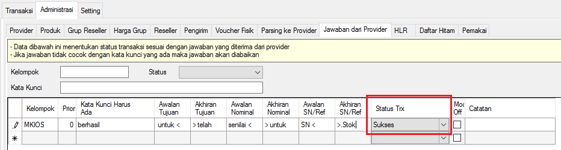

Jawaban dari Provider
Jawaban dari Provider merupakan fitur untuk memberikan keputusan akan status sebuah transaksi secara otomatis, baik itu sukses, gagal, menunggu jawaban, kirim ulang, proses ulang atau yang lain, berdasarkan respon balasan dari supplier. Supplier disini ialah dari MKIOS, DOMPUL, MTRONIK, Server Pulsa Rekanan atau yang lain.
Dalam mensetting Jawaban dari Provider kita harus paham alur kerjanya agar pemutusan status transaksi tersebut akurat sebagaimana mestinya. Kalau tidak, biasanya akan terjadi keganjilan - keganjilan.
PERHATIAN: Pahami konsepnya, jangan terpaku dengan contoh balasannya. Balasan MKIOS di bawah ini hanya digunakan sebagai bahan menjelaskan konsep. Konsep di bawah ini berlaku untuk menangkap berbagai macam model balasan supplier apa saja, BUKAN HANYA MKIOS.
Konsep dasar dalam mensetting Jawaban dari Provider adalah sebagai berikut:
-
Cari tahu respon balasan dari Supplier, misalnya balasan sukses MKIOS:
Pembelian 1 buah voucher <simPATI> senilai <10> untuk <082311940000> telah berhasil. SN <5030212113081200000>.Stok anda 10K=43.
-
Lakukan analisa balasan supplier karakter per karakter. Perhatikan ilustrasi di bawah ini, 1 kotak 1 karakter (kotak kosong itu artinya karakter spasi):
P e m b e l i a n 1 b u a h v o u c h e r < s i m P
A T I > s e n i l a i < 1 0 > u n t u k < 0 8 2 3 1
1 9 4 0 0 0 0 > t e l a h b e r h a s i l . S N < 5
0 3 0 2 1 2 1 1 3 0 8 1 2 0 0 0 0 0 > . S t o k a n d a
1 0 K = 4 3 .
- Buat 1 kelompok jawaban setiap 1 supplier, sebagai contoh: MKIOS
-
Klik Administrasi -> klik Jawaban dari Provider. Pada kolom Kelompok isi dengan nama kelompok jawaban, pada contoh ini isi dengan: MKIOS
-
Cari kalimat di dalam balasan/respon dari Supplier di atas yang akan dijadikan kata kunci. Pada contoh ini kita mendapati kalimat yang dapat dijadikan kata kunci adalah kata berhasil, maka kata ini kita masukkan ke dalam kolom: Kata Kunci Harus Ada di Jawaban dari Provider
b e r h a s i l
-
Cari kalimat apa yang terletak sebelum nomor tujuan transaksi. Pada contoh di atas nomor tujuannya ialah 082311940000 sehingga kalimat yang terletak sebelumnya adalah untuk <; maka kata ini kita masukkan ke dalam kolom: Awalan Tujuan
u n t u k <
-
Cari kalimat apa yang terletak sesudah nomor tujuan (082311940000). Pada contoh di atas ialah > telah; maka kalimat ini dimasukkan ke kolom: Akhiran Tujuan
> t e l a h
-
Cari kalimat apa yang terletak sebelum nominal. Pada contoh di atas nominalnya adalah 10 sehingga kalimat sebelumnya adalah senilai <; maka ini dimasukkan ke kolom: Awalan Nominal (untuk menampilkan kolom Awalan Nominal, arahkan kursor ke judul Tabel Jawaban dari Provider -> Klik Kanan -> Centang Awalan Nominal)
s e n i l a i <
-
Cari kalimat apa yang terletak sesudah nominal (10). Pada contoh di atas ialah > untuk; maka ini dimasukkan ke kolom: Akhiran Nominal (untuk menampilkannya sama dengan cara menampilkan kolom Awalan Nominal)
> u n t u k
-
Cari kalimat apa yang terletak sebelum SN/Serial Number. Pada contoh di atas SN nya adalah 5030212113081200000 sehingga kalimat yang terletak sebelumnya ialah SN <; maka ini yang dimasukkan ke kolom: Awalan SN/Ref
S N <
-
Cari kalimat apa yang terletak sesudah SN/Serial Number. Pada contoh di atas ialah >.Stok; maka ini masukkan ke kolom: Akhiran SN/Ref (untuk menampilkannya sama dengan cara menampilkan kolom Awalan Nominal)
> . S t o k
-
Selanjutnya tentukan Status transaksi sesuai balasan yang diterima dari Supplier. Pada contoh di atas, balasan menyatakan transaksi Sukses, maka pada kolom: Status Trx kita pilih Sukses

-
Klik menu Alat Penguji -> Penguji Jawaban -> pada box: Jawaban Provider masukkan balasan supplier yang hendak diuji -> Tentukan Kelompok Jawaban -> Klik tombol Tes. Apabila Hasilnya menyatakan Status Trx= Sukses, Nominal, Tujuan, dan SN tertangkap; maka setting penangkap jawaban telah berhasil. Bilamana belum, maka cek kembali
- Lakukan hal yang sama untuk respon balasan Supplier yang lain, 1 jenis balasan 1 baris penangkap jawaban
- Selesai
Poin penting dalam mensetting penangkap jawaban di OtomaX adalah:
- Pastikan Nominal tertangkap
- Pastikan Tujuan tertangkap
- Pastikan Status Trx yang kita berikan sesuai dengan kata kunci dari jawaban supplier
- Pastikan SN/Ref tertangkap (khusus transaksi berstatus Sukses)
- Dalam menentukan Awalan dan Akhiran perhatikan spasi, titik, koma dan karakter lainnya, sebab akan berpengaruh
Dalam terciptanya transaksi sukses atau gagal dan me-reply ke Reseller fitur Jawaban dari Provider berkolaborasi dengan setting di modul, pada contoh ini dengan modul berisi chip MKIOS:
- Pilih modul Dial yang berisi chip MKIOS -> klik kanan -> klik Setting
-
Klik tab Page1 -> pada Kelompok Jawaban arahkan ke kelompok jawaban yang dibuat di atas. Pada contoh ini kelompok yang dibuat adalah MKIOS; maka pilih MKIOS
-
Cari tahu balasan: " Pembelian 1 buah voucher <simPATI> senilai <10> untuk <082311940000> telah berhasil. SN <5030212113081200000>.Stok anda 10K=43. " ini dikirim oleh apa? Cek di menu Transaksi -> Inbox -> kolom Pengirim. Kita dapati pengirimnya ialah Dial; maka ini kita masukkan di box: ID/Nomor Sender/Pengirim Provider
- Klik tombol Simpan
- Selesai
Catatan 1: Ketika nomor tujuan transaksi dalam balasan Supplier diawali dengan angka 62 (628123456789), maka kolom: Awalan Tujuan isi: 62 dan pada kolom: Parameter Balasan isi dengan: tujuan=0[tujuan]
Catatan 2: Khusus Pengirim berupa Gtalk/Jabber/XMPP didepan account diberi tanda g:. Misalnya acc_sup@jabber.com ditulis g:acc_sup@jabber.com dalam box: ID/Nomor Sender/Pengirim Provider
Apabila Pengirim lebih dari 1, maka tulis Pengirim ke-2 ke-3 dan seterusnya di bawahnya, 1 Pengirim 1 baris. Perhatikan gambar di bawah ini:
Catatan 3: Untuk membuat penangkap jawaban, kolom Expresi Regular (RegEx) TIDAK WAJIB diisi. RegEx merupakan pilihan, dapat diisi dan dapat juga tidak diisi. Bagi yang ingin belajar RegEx klik disini, silahkan dibaca dari halaman 1 sampai dengan halaman terakhir, halaman per halaman jangan sampai ada yang dilewatkan.